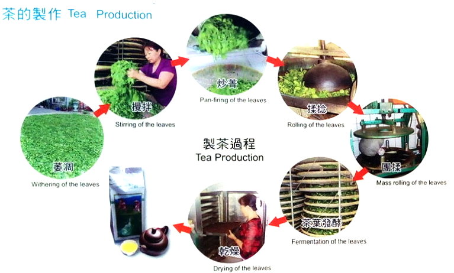
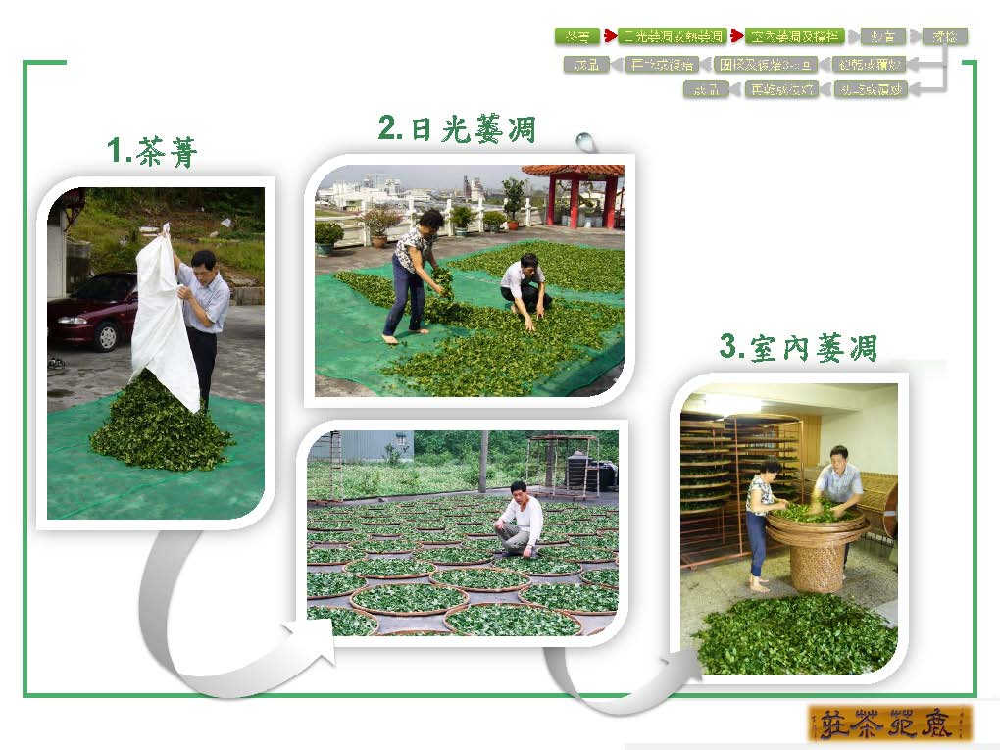
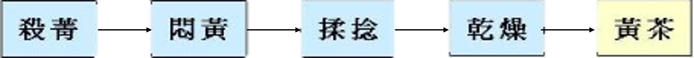

茶之製作
-
茶葉製程原理
一、萎凋及攪拌：
萎凋可分為日光（熱風）萎凋及室內萎凋，日光（熱風）萎凋室藉由熱能使茶葉水分消散，日光萎凋後移入室內進行室內萎凋繼續使茶葉水分消散。萎凋過程可使茶葉重量、體積、硬度降低，並增加細胞的通透性，促進化學反應產生特殊香氣及滋味；藉由攪拌動作使茶葉細胞摩擦破損，增加酵素及多酚物質作用進而控制茶葉發酵的程度。
二、殺菁：
殺菁主要是藉由熱抑制茶葉中多酚氧化酵素的活性，使茶葉水分消散、葉片變軟，以利後續揉捻動作，去除茶葉不良的菁味。
三、揉捻：
揉捻使茶葉捲曲成條狀，並破壞茶葉的細胞結構，使茶葉的汁液流出附著於表面，增加沖泡時的風味；在紅茶揉捻中使茶葉細胞劇烈破壞，增加多元酚物質及多酚酵素作用，生成紅茶的風味及品質。
四、乾燥：
一般茶葉須乾燥至含水量3%~5%，減少微生物生長及化學反應以利保存，並使茶葉形狀固定以利包裝及運送，及增加茶葉風味。
五、渥堆：
渥堆方法是將殺菁、揉捻後的茶葉，在一個相當濕度和溫度的環境下，進行長時間堆積保溫。渥堆的原理是一種濕熱作用，在水和氧的參與下，給以一定的熱量，使茶葉產生一系列的濕熱化學反應，令多茶葉作非酵素性的氧化作用。
-
茶葉依發酵程度分類
一、不發酵茶：
綠茶：綠茶為不發酵茶，加工法是採新鮮茶菁嫩葉，不經任何發酵處理，進廠後就立即殺菁而製成，保留了新鮮茶菁鮮綠清爽之風味
黃茶：黃茶為不發酵茶。製法基本上與綠茶類似。炒菁後悶黃是黃茶的製作特點。
二、部分發酵茶：
白茶：白茶為部分發酵茶，約起源於明清時期，產於福建省福鼎、政和、松溪和建陽等縣。加工工序為重度萎凋（48小時以上）、不攪拌、不炒菁、不揉捻而直接乾燥製程。
青茶：青茶為部分發酵茶，約起源於中國清代時期，產地主要為福建地區。加工過程中須進行複雜萎凋作業，促使茶菁進行化學變化，藉由力（攪拌）及酵素作用產生茶湯特殊香氣及滋味。
三、全發酵茶：
紅茶：紅茶屬全發酵茶。紅茶的製造過程為室內萎凋5~18小時，再經由揉捻過程使葉片細胞劇烈損傷使多酚氧化物質與多酚氧化酵素進行反應，然後再進行渥紅發酵，令葉片完全變紅，產生良好紅茶品質。
四、後發酵茶：
黑茶：將殺青、揉捻後的茶葉，在一個相當濕度和溫度的環境下，進行長時間堆積。使茶葉產生一系列的濕熱化學反應，令茶葉作非酵素性的氧化作用，形成黑茶的品質。